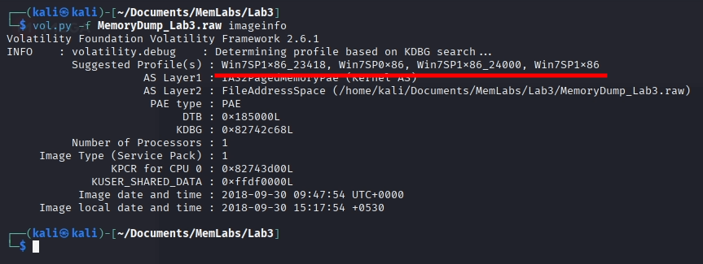
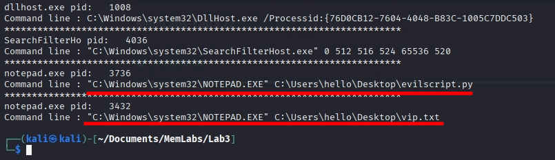
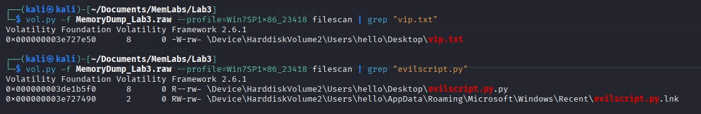
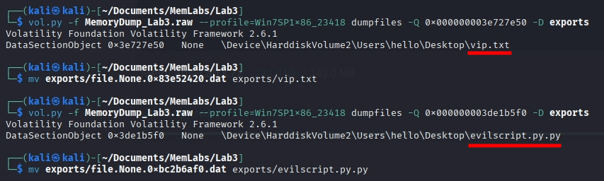
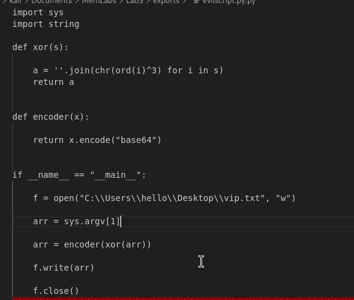
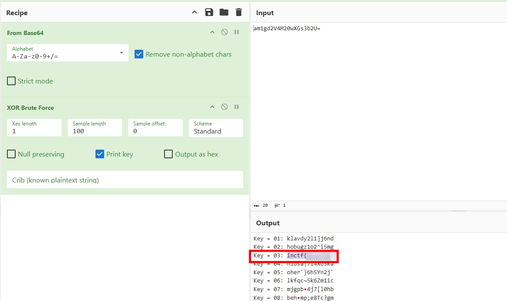
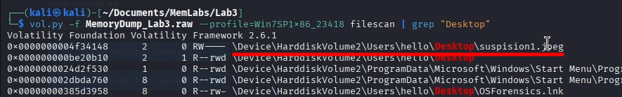
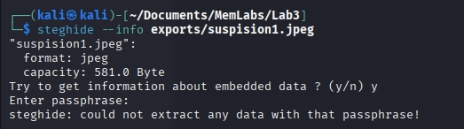

En este write-up, me adentro en los retos de MemLabs, una serie de laboratorios diseñados para poner a prueba nuestras habilidades en el análisis de volcados de memoria. Equipado con Volatility, una de las herramientas más potentes para diseccionar sistemas vivos o caídos, iré desenterrando credenciales, procesos sospechosos, conexiones de red y cualquier pista que hayan dejado atrás.
Continuamos con los desafíos de Forensic Ram. En esta ocasión nos encontramos ante MemLabs Lab 3 - The Evil’s Den. Este reto supone una dificultad media, empezando así con los retos un poco más complejos.
Un script malicioso a encriptado una información muy secreta que tenía en mi sistema. ¿Puedes recuperarla por favor?
Además, este reto consta de 1 flag dividia en 2 partes, y para resolverlo necesitaremos la herramienta de estenografía steghide.
Para sacar la memoria debemos usar el siguiente comando:
vol.py -f MemoryDump_Lab3.raw imageinfo
Al hacer esto, nos saldrá lo siguiente:
Como ya he dicho varias veces, podemos usar cualquira de estas.
Dividir este análisis en secciones es una tarea complicada, ya que el enunciado nos ha dicho más bien poco. Lo haré según los puntos que saqué antes.
Buscar archivos así a lo loco sin nada con lo que filtrar es una perdida de tiempo. Sabemos que estamos buscando un script, pero no sabemos la extensión. Aún así, sabemos que los scripts se tienen que ejecutar por consola, por lo que podemos primero hacer un listado de los comandos que se ejecutaron:
Para hacer la busqueda usé el parámetro cmdline.
Vaya, NOTEPAD.EXE ejecutó evilscript.py y vip.txt. Ya tenemos 2 cosas que buscar, hagamoslo con un filescan:
Vemos los 2 archivos están cargados en memoria, lo cual significa que podemos extraerlos y ver su contenido:
Si analizamos el script, veremos que su función es cifrar un archivo con el método xor y volverlo a cifrar en base64:
No supone un reto muy complejo, además que podemos descifrarlo muy fácilmente con cyberchef y encontrar así la primera mitad de la flag:
Si, tenemos un problema. Las 2 pistas del enunciado las acabamos de gastar en el apartado anterior. Igualmente, como necesitamos la herramienta steghide, asumo queda debemos buscar una imagen, esto debido a que la herramienta permite esconder cosas en imágenes.
Vamos a intentar hacer eso, a ver qué encontramos:
Podría haber filtrado por extensiones también, como jpg, jpeg, etc.
Encontramos un archivo sospechoso en el escritorio del usuario, obviamente lo extraemos y lo analizamos.
mmh...
En la imagen vemos un intento de sacar información del archivo. Sin embargo, nos dice que la contraseña es incorrecta. Como dato, si la herramienta nos pide una contraseña, significa que, efectivamente, el archivo tiene algo escondido. Si usamos la primera mitad de la flag como contraseña en steghide, podremos extraer la segunda mitad de la flag, completando así el reto.
Aunque no lo parezca, hemos aprendido varias cosas con este reto. Lo primero es que un atacante puede cambiar el nombre a programas para intentar pasar desapercibido. Probablemente, ese NOTEPAD.EXE sea realmente python.exe. Hemos visto como funciona un malware, aunque sí que es cierto que fue uno muy básico. Y por último, hemos visto la herramienta steghide, muy común en retos ctfs
Ir al laboratorio anterior